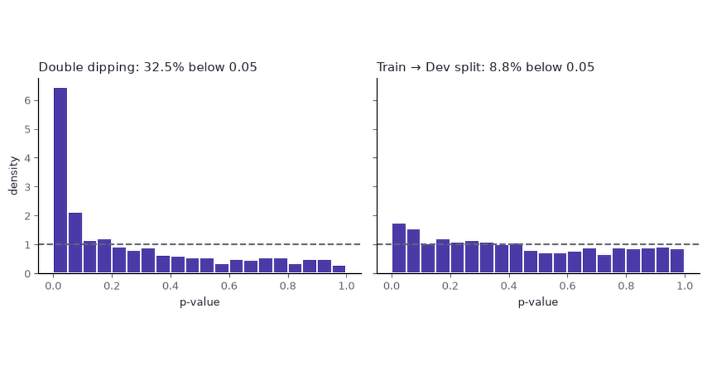

Beyond the Scatter Plot: Rigorous Interpretation of High-Dimensional Clusters
Cluster on one split, explain on a second, grade on a third, and know which claims the split still cannot license
Why testing features against clusters found in the same data flags noise, a Train → Dev → Test protocol for explaining k-means with a sparse surrogate, what that protocol cannot fix, and where mRMR and contrastive counterfactuals take over as the feature count grows.
Clustering
Explainability
Statistics
Machine Learning
Author
Ravi Kalia
Published
November 26, 2026

Beyond the Scatter Plot
Interpreting a clustering means naming the features that make the clusters differ, in a way that still holds on rows the clustering never saw.
The usual route starts with a scatter plot. You run k-means on a table of a thousand measurements, colour a two-dimensional embedding by cluster, and see three islands. The next question is what separates them, so you test every feature between clusters and sort by p-value. The list comes back long and confident. The strange part is that the same steps, run on a table of pure noise, also return a long and confident list. The clusters were found by looking for differences, and the test then asks whether there are differences.
1 The double-dipping trap
K-means places its boundaries where the cluster means are furthest apart. A t-test or ANOVA on the same rows then asks whether the means differ across those boundaries. The data chose the hypothesis and then tested it, so the test’s null distribution no longer applies. Neuroscience named this double dipping after it inflated brain-imaging results (Kriegeskorte et al. 2009).
What breaks: the p-value. It assumes the groups were fixed before the data were seen. Here the groups are a function of the data.
What it looks like: a p-value histogram piled up near zero, even when no feature differs between any real populations.
Why high dimensions make it worse: with 1,000 features, k-means can always find some direction along which a split separates the rows. The features that load on that direction then “differ” between clusters.
The remedy is to use different rows for different jobs.
2 Train → Dev → Test protocol
A clustering analysis makes three separate decisions. Each one needs rows that played no part in the decision before it.
Train: draw the boundaries. Fit the scaler and k-means on the training rows only. Choose the number of clusters here as well.
Dev: explain the boundaries. Freeze the centroids and assign each dev row to its nearest centroid. Fit an explanation of that assignment on dev rows: here, an L1-regularised logistic regression (a sparse surrogate) that predicts the cluster label from the features and keeps only the features it needs. Tune the surrogate by cross-validation inside dev.
Test: grade the explanation. Touch the test rows once, after the feature list is fixed. Two checks:
Fidelity: does the surrogate reproduce the centroids’ assignments on rows neither has seen?
Prediction strength (Tibshirani and Walther 2005): cluster the test rows afresh, using only the dev-selected features, and measure how often pairs the fresh clustering puts together are also put together by the train centroids. Scores near 1 mean the partition recurs in new data; Tibshirani and Walther suggest 0.8 to 0.9 as the bar.
The split has the same purpose as in supervised learning, where a test set is spent once (The Test Set Is Spent Once). An earlier post here, Feature Importance After Clustering, fits a decision tree to cluster labels on the rows that made them; the protocol moves that fit to rows the clustering never saw.
3 Implementation in scikit-learn
3.1 Data
The data are synthetic, so the true answer is known. The generating process:
1,500 rows, 1,000 features, three groups of equal expected size.
Group \(k\) has its own 5 driver features, shifted by \(\delta\) noise standard deviations. The other 985 features are independent standard normal noise in every group.
\(\delta = 2.5\) is the world with real clusters; \(\delta = 0\) is the null world, with one population and nothing to find.
It stands in for a wide assay, such as a protein panel or an expression matrix, where a few measurements define subtypes and most are irrelevant to them. A wrong answer costs a follow-up experiment on features that never mattered. K-means fits this data because the groups are spherical and equal-sized, which is k-means’ own model.
3.2 Pipeline
The pipeline fits k-means on Train only, assigns Dev out of sample, and fits the L1 surrogate on Dev. The surrogate’s penalty is the strongest one whose cross-validated accuracy is within one standard error of the best (the one-standard-error rule), which favours short feature lists.
Code
import warningsimport matplotlib.pyplot as pltimport numpy as npimport pandas as pdfrom IPython.display import Markdownfrom scipy import statsfrom scipy.optimize import linprog, minimizefrom sklearn.cluster import KMeansfrom sklearn.exceptions import ConvergenceWarningfrom sklearn.feature_selection import mutual_info_classiffrom sklearn.linear_model import LogisticRegressionfrom sklearn.metrics import adjusted_rand_scorefrom sklearn.model_selection import StratifiedKFold, cross_val_score, train_test_splitfrom sklearn.preprocessing import StandardScalerwarnings.filterwarnings("ignore", category=ConvergenceWarning)def md_table(df):"""Markdown table that keeps strings as written (no numeric re-parsing)."""return Markdown(df.to_markdown(index=False, disable_numparse=True))
Code
from types import SimpleNamespaceN, P, K, PER_CLUSTER =1500, 1000, 3, 5# rows, features, clusters, drivers per clusterdef make_data(snr, seed):"""Group k is shifted by `snr` noise SDs on its own PER_CLUSTER driver features.""" rng = np.random.default_rng(seed) drivers = rng.choice(P, K * PER_CLUSTER, replace=False) # cluster k owns a block of 5 centres = np.zeros((K, P))for k inrange(K): centres[k, drivers[k * PER_CLUSTER : (k +1) * PER_CLUSTER]] = snr group = rng.integers(0, K, N) X = centres[group] + rng.standard_normal((N, P))return X, group, driversdef three_way_split(n, seed):"""50% train, 25% dev, 25% test.""" train, rest = train_test_split(np.arange(n), test_size=0.5, random_state=seed) dev, test = train_test_split(rest, test_size=0.5, random_state=seed)return train, dev, testdef l1_logit(C):# saga visits rows in random order; a fixed random_state makes reruns identicalreturn LogisticRegression( C=C, l1_ratio=1.0, solver="saga", tol=1e-3, max_iter=5000, random_state=0 )def sparse_surrogate(X, labels, seed, Cs=np.logspace(-2, -0.5, 6)):"""L1 logistic regression; strongest penalty within one SE of the best CV accuracy.""" cv = StratifiedKFold(5, shuffle=True, random_state=seed) acc = np.array([cross_val_score(l1_logit(C), X, labels, cv=cv, n_jobs=-1) for C in Cs]) mean, se = acc.mean(axis=1), acc.std(axis=1, ddof=1) / np.sqrt(cv.n_splits) C = Cs[np.flatnonzero(mean >= mean.max() - se[mean.argmax()])[0]] # smallest C = strongestreturn l1_logit(C).fit(X, labels)def run(snr, seed): X, group, drivers = make_data(snr, seed) train, dev, test = three_way_split(N, seed) scaler = StandardScaler().fit(X[train]) # statistics from train only X_tr, X_dev, X_te = (scaler.transform(X[i]) for i in (train, dev, test)) km = KMeans(K, n_init=20, random_state=seed).fit(X_tr) # 1. train: draw the boundaries dev_labels = km.predict(X_dev) # 2. dev: assign out of sample... surrogate = sparse_surrogate(X_dev, dev_labels, seed) # ...and explain the assignment selected = np.flatnonzero(np.abs(surrogate.coef_).max(axis=0) >0)return SimpleNamespace( snr=snr, seed=seed, X=X, group=group, drivers=drivers, train=train, dev=dev, test=test, X_tr=X_tr, X_dev=X_dev, X_te=X_te, km=km, dev_labels=dev_labels, surrogate=surrogate, selected=selected, )real = run(snr=2.5, seed=0)null = run(snr=0.0, seed=0)for r in (real, null): hits = np.intersect1d(r.selected, r.drivers).sizeprint(f"snr={r.snr}: surrogate keeps {r.selected.size} features, {hits} of 15 drivers")
snr=2.5: surrogate keeps 15 features, 15 of 15 drivers
snr=0.0: surrogate keeps 343 features, 6 of 15 drivers
Code
def pct(x):returnf"{100* x:.1f}%"def rng_str(values, f=lambda v: f"{v:.2f}"):"""'lo–hi' over the defined values (NaN means 'undefined on that seed').""" values = [v for v in values ifnot np.isnan(v)]ifnot values:return"undefined" lo, hi =min(values), max(values)return f(lo) if f(lo) == f(hi) elsef"{f(lo)}–{f(hi)}"R = {}R["real_sel"] =str(real.selected.size)R["real_hits"] =str(np.intersect1d(real.selected, real.drivers).size)R["null_sel"] =str(null.selected.size)R["null_hits"] =str(np.intersect1d(null.selected, null.drivers).size)R["real_ari"] =f"{adjusted_rand_score(real.group[real.train], real.km.labels_):.2f}"if null.selected.size ==0: R["null_sentence"] ="In the null world, on this seed, the surrogate keeps no features."else: R["null_sentence"] = (f"In the null world, on this seed, the surrogate keeps {R['null_sel']} features, "f"{R['null_hits']} of them drivers by name only, since no feature carries signal there." )
With real clusters, k-means on Train recovers the groups (adjusted Rand index 0.98 against the truth), and the surrogate keeps 15 features, 15 of them true drivers.
In the null world, on this seed, the surrogate keeps 343 features, 6 of them drivers by name only, since no feature carries signal there. The one-standard-error rule pushes towards an empty list there: when no weaker penalty beats the strongest by more than one standard error of cross-validated accuracy, the rule takes the strongest, which zeroes every coefficient. It does not always get there. An empty list is good news, and a non-empty one is not yet evidence that the clusters exist.
3.3 Double dipping, measured
The naive analysis clusters all 1,500 rows and runs a one-way ANOVA per feature on the same rows. The split analysis runs the same ANOVA on Dev rows, labelled by the Train centroids. In the null world every feature is noise, so a calibrated test flags 5% of them at \(p < 0.05\).
Figure 1: P-values of 1,000 pure-noise features tested against k-means clusters. Left: clusters fitted on the rows being tested. Right: clusters fitted on Train, tested on Dev. The dashed line is the flat histogram a calibrated test gives.
Double dipping flags 32.5% of the noise features; the Train → Dev split flags 8.8%. The split removes most of the inflation and not all of it, and the remainder is the subject of the section on what the split cannot license.
3.4 Test-set checks
The feature list says which features the partition uses. The test rows say whether that explanation and that partition hold up on new data.
Code
def fidelity(r):"""Share of test rows where the surrogate agrees with the train centroids."""return (r.surrogate.predict(r.X_te) == r.km.predict(r.X_te)).mean()def prediction_strength(r):"""Tibshirani & Walther (2005), with the fresh test clustering on dev-selected features."""if r.selected.size ==0:return np.nan fresh = KMeans(K, n_init=20, random_state=r.seed).fit_predict(r.X_te[:, r.selected]) frozen = r.km.predict(r.X_te) strengths = []for c inrange(K): members = np.flatnonzero(fresh == c) m = members.sizeif m <2:return0.0 together = frozen[members][:, None] == frozen[members][None, :] strengths.append((together.sum() - m) / (m * (m -1)))returnmin(strengths)for r in (real, null):print(f"snr={r.snr}: fidelity {fidelity(r):.3f}, prediction strength {prediction_strength(r):.3f}")R["real_fid"], R["real_ps"] =f"{fidelity(real):.3f}", f"{prediction_strength(real):.2f}"null_chance = np.bincount(null.km.predict(null.X_te)).max() /len(null.test)if null.selected.size ==0: R["null_bullet"] = (f"fidelity {fidelity(null):.3f}, against {null_chance:.2f} for always guessing the ""largest cluster. With no features selected there is nothing to re-cluster the test ""rows on, so prediction strength is undefined. The empty list is the verdict." )else: R["null_bullet"] = (f"fidelity {fidelity(null):.3f}, against {null_chance:.2f} for always guessing the "f"largest cluster, and prediction strength {prediction_strength(null):.2f}. Both fall ""well short, and that is the warning the feature list never gives." )
Real clusters: fidelity 1.000, prediction strength 1.00. The surrogate reproduces the partition on unseen rows, and a fresh clustering of those rows on the selected features finds the same groups.
Null: fidelity 0.427, against 0.38 for always guessing the largest cluster, and prediction strength 0.33. Both fall well short, and that is the warning the feature list never gives.
3.5 Ten seeds, two worlds
One seed can produce a clean coincidence, so the table repeats the run on ten seeds and reports the range.
Code
SEEDS =range(10)def summarise(r):returndict( ari=adjusted_rand_score(r.group[r.train], r.km.labels_), dd=noise_flagged(double_dipped_pvalues(r), r), split=noise_flagged(anova_pvalues(r.X_dev, r.dev_labels), r), n_sel=r.selected.size, hits=np.intersect1d(r.selected, r.drivers).size, fid=fidelity(r), ps=prediction_strength(r), )rows = {snr: [summarise(run(snr, s)) for s in SEEDS] for snr in (0.0, 2.5)}spec = [ ("Train ARI against the truth", "ari", lambda v: f"{v:.2f}"), ("Noise flagged at p < 0.05, double dipping", "dd", pct), ("Noise flagged at p < 0.05, Train → Dev split", "split", pct), ("Features the surrogate keeps", "n_sel", lambda v: f"{v:.0f}"), ("True drivers among them (of 15)", "hits", lambda v: f"{v:.0f}"), ("Test fidelity", "fid", lambda v: f"{v:.3f}"), ("Test prediction strength", "ps", lambda v: f"{v:.2f}"),]seed_table = pd.DataFrame( [ {"Quantity": label,"Null world (δ = 0)": rng_str([d[key] for d in rows[0.0]], f),"Real clusters (δ = 2.5)": rng_str([d[key] for d in rows[2.5]], f), }for label, key, f in spec ])S = { (snr, key): rng_str([d[key] for d in rows[snr]], f)for snr in rowsfor _, key, f in spec}empty_null =sum(d["n_sel"] ==0for d in rows[0.0])assert0< empty_null <len(SEEDS) # the prose describes both kinds of null seedS["empty_null"] =str(empty_null)S["kept_null"] =str(len(SEEDS) - empty_null)S["max_fid_null"] =f"{max(d['fid'] for d in rows[0.0]):.3f}"S["min_fid_real"] =f"{min(d['fid'] for d in rows[2.5]):.3f}"S["max_sel_null"] =f"{max(d['n_sel'] for d in rows[0.0])}"assertmax(d["ps"] for d in rows[0.0] if d["n_sel"]) <min(d["ps"] for d in rows[2.5])md_table(seed_table)
Quantity
Null world (δ = 0)
Real clusters (δ = 2.5)
Train ARI against the truth
-0.00–0.00
0.93–0.98
Noise flagged at p < 0.05, double dipping
30.7%–34.2%
4.2%–6.7%
Noise flagged at p < 0.05, Train → Dev split
7.5%–10.3%
4.2%–5.5%
Features the surrogate keeps
0–343
13–15
True drivers among them (of 15)
0–6
13–15
Test fidelity
0.381–0.635
0.995–1.000
Test prediction strength
0.33–0.36
0.97–1.00
Prediction strength is undefined on a seed whose surrogate keeps no features, and the range covers the seeds where it is defined.
In the null world, double dipping flags 30.7%–34.2% of noise features and the split flags 7.5%–10.3%, against a nominal 5%.
With real clusters the inflation disappears for both (4.2%–6.7% and 4.2%–5.5%), because the boundaries follow the drivers and the noise features carry nothing about them.
In the null world the surrogate keeps no features on 5 of ten seeds, and up to 343 on the other 5.
The test-set checks separate the worlds on every seed. Null fidelity is at most 0.635 and real fidelity at least 0.995. Where the null surrogate keeps features, prediction strength is 0.33–0.36, against 0.97–1.00 with real clusters.
4 What the split cannot license
The Train → Dev split leaves inflation in the null world because the Dev labels are still a function of the Dev features. Each Dev row’s label is “which train centroid is nearest”, and that is computed from the row’s own feature values. When the centroids differ a little along feature \(j\), Dev rows with high values of \(j\) lean towards one cluster, and an ANOVA on \(j\) detects the lean. Gao, Bien and Witten (2024) note that the inflation persists even when separate data sets define the groups and test them, and build a test that conditions on the clustering; Chen and Witten (2023) give the k-means version.
The split does license narrower claims. Sorted by what each needs:
Claim
Licensed by
The partition is drawn mostly along features \(S\)
Dev selection, plus test fidelity
The partition recurs in new data
Test prediction strength
Feature \(j\)’s mean differs between the clusters, \(p < 0.05\)
Selective inference, or data fission
The third row needs one of two methods. Selective inference (Gao et al.; Chen and Witten) conditions the test on the clustering having come out the way it did. Data fission (Leiner et al. 2025) splits each observation instead of the rows: with Gaussian noise of known variance \(\sigma^2\), draw \(Z \sim N(0, \sigma^2)\) and form \(f = X + Z\) and \(g = X - Z\). The two are independent given the means, so clustering on \(f\) and testing on \(g\) gives calibrated p-values. Data thinning (Neufeld et al. 2024) extends the idea to other distributions. The cost is that both halves are noisier than \(X\).
4.1 Three tests in the browser
The widget runs the three analyses on fresh synthetic data: two groups, 400 rows, with the first 5 features shifted by the signal-to-noise ratio and the rest pure noise. Each point is one feature’s p-value from the first replicate; the tiles pool enough replicates for about 2,000 noise tests per setting.
Testing features against k-means clustersinteractive
html`<div class="widget-stats">${result.rates.map((r) =>html`<div class="widget-stat"> <div class="widget-stat-value">${r.falsePositive===null?"—": (100* r.falsePositive).toFixed(1) +"%"}</div> <div class="widget-stat-label">${r.method}: noise flagged at p < ${NOMINAL}</div> <div class="widget-note">${r.driverTests?`drivers found (Bonferroni): ${r.driverHits} of ${r.driverTests}`:"no drivers at zero signal"}${r.oneCluster?` · ${r.oneCluster} of ${result.reps} replicates put every tested row in one cluster`:""}</div></div>`)}</div>`
Dashed line: p = 0.05. Points above it are flagged. Drivers are the first five features.
Instructions, each checked against the model on a grid of slider settings and five seeds:
Leave the signal at 0 and set features to 10. Double dipping flags about three noise features in four, the sample split about three in five, and data fission about one in twenty.
Drag the features up to 2,000. The split’s excess fades towards 5%, because the centroids’ small differences are spread over many features. The double-dipping excess shrinks too and stays a few points above 5%.
Set features to 50 and signal to 1. The clusters are real now, and the split still flags more than one noise feature in ten, because weak drivers leave the boundaries partly drawn in noise. Fission stays calibrated and pays for it: it finds a minority of the drivers, where the split finds nearly all of them.
Raise the signal to 3, features still at 50. All three tests settle near 5% on noise features. Once the boundaries follow real drivers, the noise features carry nothing about them.
5 Interpretation methods by feature count
Which explanation method fits depends mostly on the feature count \(p\), relative to the row count and to how correlated the features are. The bands are rules of thumb.
Features
Typical data
Method
What it reports
Where it stops working
< 10
lab panels, survey scales
Per-feature ANOVA or Kruskal–Wallis on held-out labels, with effect sizes (\(\eta^2\), Cohen’s \(d\))
how much each feature moves between clusters
the p-value is still circular; report the effect size with an interval
10s–100s
clinical and customer tables
Sparse surrogate: L1 logistic regression, or a threshold tree with one leaf per cluster (Moshkovitz et al. 2020)
a short rule set that reproduces the partition
correlated features make the chosen set unstable; check test fidelity
1,000s
expression panels, text n-grams
mRMR filter to a shortlist, then a sparse surrogate on it
a short, non-redundant feature list
mutual-information estimates get noisy at a few hundred rows
100k+
ATAC peaks, SNP arrays, raw pixels
Deep metric learning (a learned embedding, e.g. a triplet loss; Schroff et al. 2015), clustering in that space, and CEM counterfactuals for individuals
per-individual minimal changes
a global feature list stops meaning much; explanations depend on the learned model
The implementation’s 1,000 features sit in the third band, and the L1 surrogate worked there because its 15 drivers are independent of each other. Correlated features are what the third band’s filter is for.
6 Information-theoretic feature selection (mRMR)
Many wide tables measure the same thing several times: a gene and its co-regulated neighbours, a pixel and the pixels beside it. Ranking features by how much they say about the cluster label then fills the shortlist with copies of the strongest signal and leaves weaker, distinct drivers off it.
Minimum redundancy, maximum relevance (mRMR; Peng, Long and Ding 2005) builds the shortlist greedily. At each step it adds the feature \(j\) that maximises
where \(c\) is the Dev cluster label, \(S\) is the set chosen so far, and \(I\) is mutual information. Relevance here uses scikit-learn’s nearest-neighbour estimator. Redundancy uses the Gaussian formula \(I = -\tfrac12 \log(1 - \rho^2)\), which is exact for jointly normal features and costs one correlation matrix.
The test overwrites 20 noise columns with noisy copies (noise SD 0.3) of two drivers, one from each of two clusters. Each method then picks 15 features from the Dev rows.
Relevance alone spends 10–14 of its 15 picks on copies and covers 2–5 distinct drivers.
mRMR picks 1–4 copies and covers 13–14.
The L1 surrogate, fitted on all 1,000 features, covers 12–15 drivers but keeps 4–16 copies alongside them. It does not collapse redundancy either; it only gets away with that while fitting on every feature is affordable.
mRMR’s place is ahead of the surrogate when \(p\) is large enough that the surrogate should only see a shortlist. Its picks are still a function of the Dev labels, so the same test-set checks apply to the list it produces.
7 Contrastive explanations (CEM)
A feature list explains the partition. An individual asks a different question: what is the smallest change to this row that would move it to another cluster? The Contrastive Explanations Method (CEM; Dhurandhar et al. 2018) answers it with two objects:
Pertinent positive: the smallest subset of the row’s features that alone keeps it in its cluster.
Pertinent negative: the smallest change \(\delta\) whose addition moves the row to a different cluster. This is the counterfactual cluster transition.
CEM finds \(\delta\) by minimising an elastic-net penalty, \(\beta\lVert\delta\rVert_1 +
\lVert\delta\rVert_2^2\), plus a hinge loss for not having changed class. It optionally adds an autoencoder term that keeps \(x + \delta\) near the data. For k-means the class change is linear in \(\delta\). Row \(x\) moves to cluster \(t\) with margin \(\kappa\) when, for every other centroid \(c_j\),
That gives \(K - 1\) linear constraints, so the pertinent negative is a small convex problem. Its dual has only \(K - 1\) variables, and the primal solution is a soft threshold of \(-A^\top\lambda\). The code solves the dual exactly and checks the result against the centroids. It also solves the pure-\(\ell_1\) version as a linear program, for contrast.
Code
def constraints(x, centres, target, margin): others = [j for j inrange(len(centres)) if j != target] A = np.array([2* (centres[j] - centres[target]) for j in others]) b = np.array([centres[j] @ centres[j] - centres[target] @ centres[target] for j in others])return A, b - margin - A @ x # A @ delta <= rhsdef pertinent_negative(x, centres, target, beta=1.0, margin=1.0):"""argmin beta*|d|_1 + |d|_2^2 s.t. x + d is nearest `target` by `margin` (exact dual).""" A, rhs = constraints(x, centres, target, margin)def delta(lam): g = A.T @ lamreturn-np.sign(g) * np.maximum(np.abs(g) - beta, 0) /2def neg_dual(lam): d = delta(lam)return-(beta * np.abs(d).sum() + d @ d + lam @ (A @ d - rhs)) lam = minimize(neg_dual, np.ones(len(rhs)), bounds=[(0, None)] *len(rhs)).xreturn delta(lam)def l1_only(x, centres, target, margin=1.0):"""argmin |d|_1 under the same constraints, as a linear program.""" A, rhs = constraints(x, centres, target, margin) p =len(x) sol = linprog(np.ones(2* p), A_ub=np.hstack([A, -A]), b_ub=rhs, bounds=(0, None))return sol.x[:p] - sol.x[p:]centres = real.km.cluster_centers_test_labels = real.km.predict(real.X_te)# Which k-means cluster each driver belongs to: driver block g -> the cluster most of# true group g's train rows fell in. (k-means numbers its clusters arbitrarily.)owner = np.full(P, -1)for g inrange(K): cluster = np.bincount(real.km.labels_[real.group[real.train] == g], minlength=K).argmax() owner[real.drivers[g * PER_CLUSTER : (g +1) * PER_CLUSTER]] = clusterstats_en, stats_l1 = [], []for x, a inzip(real.X_te, test_labels): t = (a +1) % Kfor fn, out in ((pertinent_negative, stats_en), (l1_only, stats_l1)): d = fn(x, centres, t) changed = np.flatnonzero(np.abs(d) >1e-8) drv = changed[owner[changed] >=0]# source-cluster drivers should go down, target-cluster drivers up expected = np.where(owner[drv] == t, 1, np.where(owner[drv] == a, -1, 0)) out.append(dict( n=changed.size, n_drivers=drv.size, direction_ok=int((np.sign(d[drv]) == expected).sum()), big=np.abs(d).max(), moved=real.km.predict((x + d)[None])[0] == t, ))en, l1 = pd.DataFrame(stats_en), pd.DataFrame(stats_l1)assert en.moved.all() and l1.moved.all()C =dict( rows=str(len(en)), en_n=rng_str(en.n, lambda v: f"{v:.0f}"), en_drv=pct(en.n_drivers.sum() / en.n.sum()), en_dir=pct(en.direction_ok.sum() / en.n_drivers.sum()), en_med=f"{en.big.median():.2f}", en_max=f"{en.big.max():.2f}", l1_n=rng_str(l1.n, lambda v: f"{v:.0f}"), l1_med=f"{l1.big.median():.1f}", l1_max=f"{l1.big.max():.1f}", data_max=f"{np.abs(real.X_tr[:, real.drivers]).max():.1f}",)# one row, shown in fullx, a = real.X_te[0], test_labels[0]t = (a +1) % Kd = pertinent_negative(x, centres, t)changed = np.flatnonzero(np.abs(d) >1e-8)def role(j):if owner[j] <0:return"noise" side = {a: " (source)", t: " (target)"}.get(owner[j], "")returnf"driver of cluster {owner[j]}{side}"C["a"], C["t"] =str(a), str(t)md_table( pd.DataFrame( {"Feature": [str(j) for j in changed],"Role (from the generator)": [role(j) for j in changed],"Value": [f"{x[j]:+.2f}"for j in changed],"Counterfactual": [f"{x[j] + d[j]:+.2f}"for j in changed], } ))
Feature
Role (from the generator)
Value
Counterfactual
40
driver of cluster 1 (target)
-0.77
+0.14
266
driver of cluster 0 (source)
+2.22
+1.42
304
driver of cluster 0 (source)
+0.94
+0.08
502
driver of cluster 1 (target)
-0.43
+0.41
505
driver of cluster 1 (target)
-0.78
+0.04
606
driver of cluster 0 (source)
+0.32
-0.50
628
driver of cluster 0 (source)
+0.88
+0.04
809
driver of cluster 1 (target)
-1.00
-0.24
838
driver of cluster 1 (target)
-0.87
-0.06
910
driver of cluster 0 (source)
+1.82
+1.01
The table shows one test row, moved from cluster 0 to cluster 1 (values in Train standard-deviation units). Over all 375 test rows:
Elastic net (CEM’s penalty): a counterfactual changes 10–15 features, and 99.9% of all changes land on true drivers. Of those, 99.6% go the expected way: the source cluster’s drivers down, the target cluster’s up. The largest single change in a row has median 0.93 units and never exceeds 2.05.
Pure \(\ell_1\): a linear program with \(K - 1 = 2\) constraints has an optimal vertex with at most 2 nonzero coordinates, so it changes 1–2 features. The largest change has median 7.7 units and reaches 18.0, where no driver value in the Train rows exceeds 3.4 in absolute value. CEM’s \(\ell_2\) term, and its optional autoencoder, exist to stop counterfactuals leaving the data.
Counterfactuals are computed from the Train centroids and are applied to Test rows, so the explanation is out of sample. They describe the partition, not the population: a row moved across a boundary that k-means drew in noise is moved across nothing.
8 Constraints
Sample splitting is not selective inference. The Train → Dev split licenses claims about what the partition uses and whether it recurs. It does not license a p-value for “the clusters differ on feature \(j\)”; the widget shows the excess at low \(p\).
Data fission needs a known noise model. The Gaussian version needs \(\sigma^2\), and both halves carry extra noise. Data thinning covers Poisson, binomial and other convolution-closed families.
Prediction strength needs enough test rows to cluster. With 375 test rows and 1,000 features, a fresh k-means on all features can fail even when the clusters are real, which is why the check here uses only the dev-selected features.
The bands in the scaling table depend on rows and correlation. 1,000 independent features with 1,500 rows are easier than 200 correlated features with 80 rows.
The synthetic data favour k-means. Spherical, equal-sized groups are k-means’ own model. On elongated or unequal groups, the partition itself can be wrong before any explanation starts; see Clustering Has No Labels to Tune Against.
Chen, Y. T. and Witten, D. M. (2023). Selective inference for k-means clustering. Journal of Machine Learning Research 24(152). https://jmlr.org/papers/v24/22-0371.html
Dhurandhar, A., Chen, P.-Y., Luss, R., Tu, C.-C., Ting, P., Shanmugam, K. and Das, P. (2018). Explanations based on the missing: towards contrastive explanations with pertinent negatives. NeurIPS 2018. https://arxiv.org/abs/1802.07623
Gao, L. L., Bien, J. and Witten, D. (2024). Selective inference for hierarchical clustering. Journal of the American Statistical Association 119(545). https://arxiv.org/abs/2012.02936
Kriegeskorte, N., Simmons, W. K., Bellgowan, P. S. F. and Baker, C. I. (2009). Circular analysis in systems neuroscience: the dangers of double dipping. Nature Neuroscience 12, 535–540. https://doi.org/10.1038/nn.2303
Leiner, J., Duan, B., Wasserman, L. and Ramdas, A. (2025). Data fission: splitting a single data point. Journal of the American Statistical Association. https://arxiv.org/abs/2112.11079
Moshkovitz, M., Dasgupta, S., Rashtchian, C. and Frost, N. (2020). Explainable k-means and k-medians clustering. ICML 2020. https://arxiv.org/abs/2002.12538
Neufeld, A., Dharamshi, A., Gao, L. L. and Witten, D. (2024). Data thinning for convolution-closed distributions. Journal of Machine Learning Research 25(57). https://jmlr.org/papers/v25/23-0446.html
Peng, H., Long, F. and Ding, C. (2005). Feature selection based on mutual information: criteria of max-dependency, max-relevance, and min-redundancy. IEEE Transactions on Pattern Analysis and Machine Intelligence 27(8), 1226–1238. https://doi.org/10.1109/TPAMI.2005.159
Schroff, F., Kalenichenko, D. and Philbin, J. (2015). FaceNet: a unified embedding for face recognition and clustering. CVPR 2015. https://arxiv.org/abs/1503.03832
Tibshirani, R. and Walther, G. (2005). Cluster validation by prediction strength. Journal of Computational and Graphical Statistics 14(3), 511–528. https://doi.org/10.1198/106186005X59243